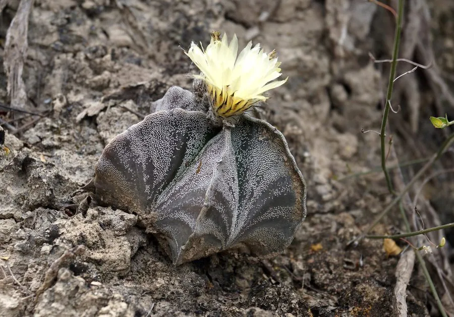

多肉植物 · 植物界
鸾凤玉 Astrophytum myriostigma

仙人掌科星球属球形多肉，球体无刺、覆白色星状斑点，棱数多变，夏季开黄花，原产墨西哥，又名星兜，是著名的无刺仙人掌。
- 分类
- 门被子植物门纲木兰纲目石竹目科仙人掌科属星球属
- 栖息环境
- 墨西哥中部干旱高原的砾石坡地，喜光、耐旱、怕严寒
- 地理分布
- 原产墨西哥中部，世界各地盆栽栽培
- 保护级别
- 暂无评估；CITES 附录Ⅱ（仙人掌科）
物种志
鸾凤玉为仙人掌科星球属球形多肉植物，球体高 10–20 厘米，直径 10–20 厘米，表面灰绿色，密布白色星状小斑点，无刺；棱 3–7 条，常见 5 棱，棱脊明显。花顶生，黄色，漏斗形，直径 4–6 厘米，花期夏季；果实为蒴果。
鸾凤玉原产墨西哥中部的干旱高原，喜阳光充足、温暖干燥和通风良好的环境，耐旱而不耐寒，冬季需保持 5℃ 以上。它球体无刺、覆白色星点，棱数多变，是仙人掌科中形态优雅的种类，因形似星兜而被称为“星兜”。栽培以颗粒土为主，浇水见干见湿；繁殖以播种为主，也可嫁接在生长健壮的砧木上，加快生长；嫁接苗需放在通风处养护。
形态与习性
- 株高球体高 10–20 厘米，直径 10–20 厘米
- 花期夏季，花黄色，漏斗形
- 果期花后结蒴果
- 光照喜充足阳光，夏季可适度遮阴
- 水分耐旱，见干见湿，忌积水
- 土壤颗粒为主、排水良好的石灰质土
- 繁殖播种、嫁接
- 主要用途室内盆栽观赏、多肉收藏
趣味知识
- 鸾凤玉球体无刺，表面密布白色星状斑点，是它最显著的特征。
- 它的棱数不固定，常见 3–7 棱，因此有“多棱星球”的说法。
- 鸾凤玉又称“星兜”，球体圆整，是仙人掌爱好者喜爱的种类。
- 它原产墨西哥中部高原，耐旱怕寒，冬季需保持 5℃ 以上。